2D puzzle game featuring a fuzzy little cat
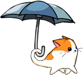
"Watching the cat walk is so soothing."
"He's so cute! Look at him go... go Raincat, go!"
Download to play Raincat! Windows | Linux
Written in Haskell Get the Source!
what fans have said
"Raincat is amazing. It's simple without being boring, and is probably the cutest thing I've seen in a while." —cekeen
how the cat sauntering in the rain came to be
Project Raincat is a game developed by Carnegie Mellon students through GCS during the Fall 2008 semester. Raincat features game play inspired from classics Lemmings and The Incredible Machine.
The project proved to be an excellent learning experience for the programmers. Everything is programmed in Haskell.
It's always raining in Pittsburgh, which makes for gray days while cats are just adorable—perfect for brightening up such days.
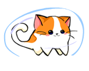 Your goal is simple: guide the fuzzy cat safe and dry to the end of each level. There are multiple ways to clear any given level; such flexible solutions hope to provide a more enjoyable game play experience.
Become our fan on Facebook! We make a new cat game every semester, so you'll be updated with future endeavors.
As students who make games for fun, we understand that our product isn't perfect. We never anticipated such a wide audience, but because of this warm reception, we have improved some controls to make the game more enjoyable (January 2010). If you have any improvements to the build you'd like to share, feel free to contact us. We'll be happy to hear your feedback.
Finally, we'd like to mention that Project Raincat placed first in GCS Gold during the following spring semester release party. Now, would you care to play?
made by people who like cats maybe a little too much
Team on the GCS Project Pagefor your kitty watching pleasure
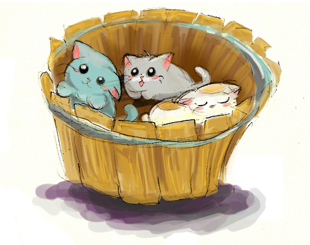
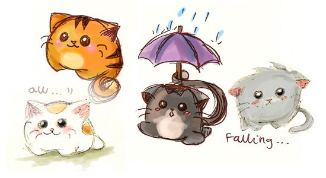
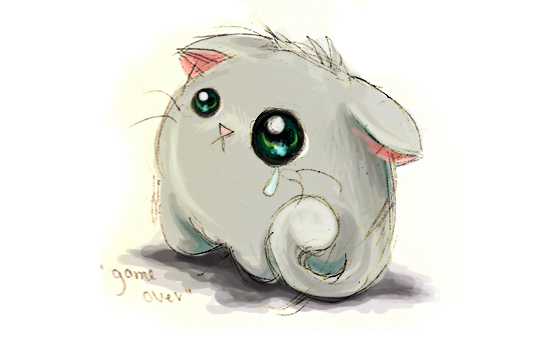
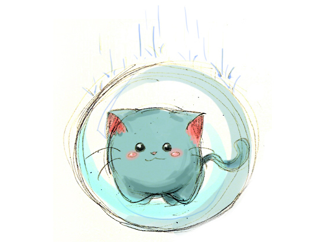
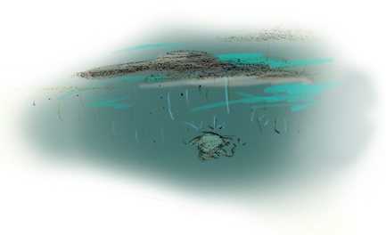
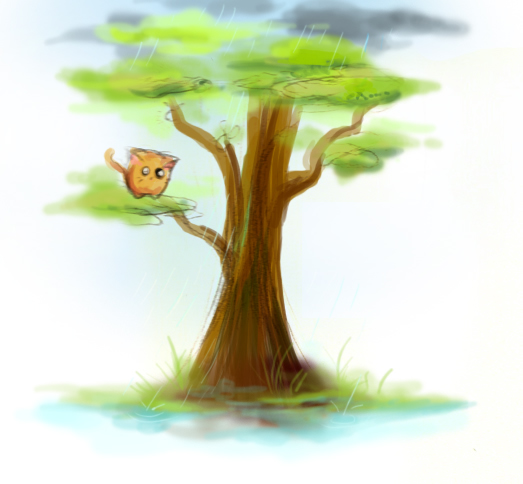
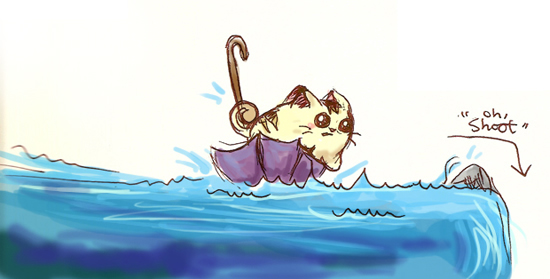
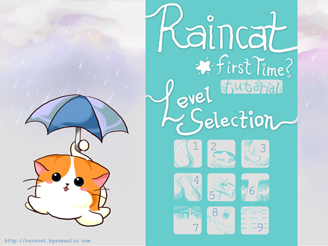
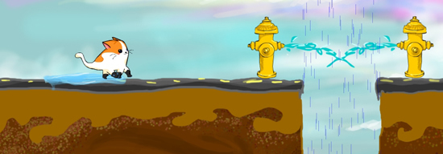
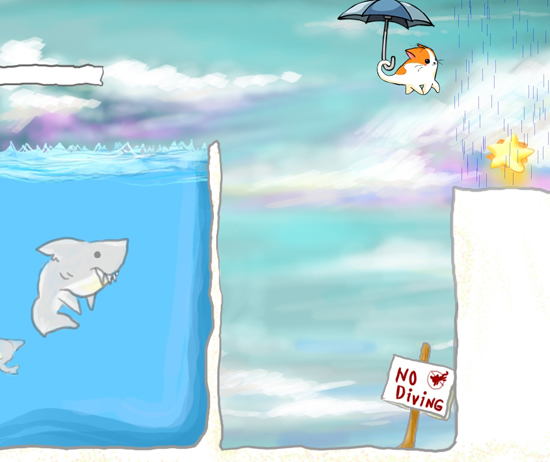
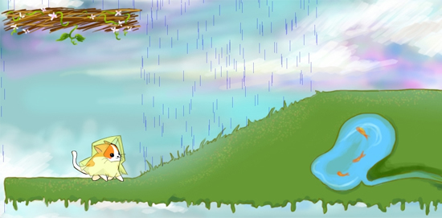
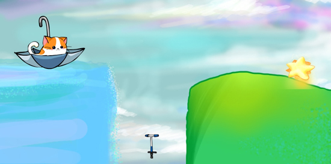
{kind=link}
{kind=link}
{kind=link}
{kind=link}
{kind=link}
{kind=link}
{kind=link}
{kind=link}
{kind=link}
{kind=link}
{kind=link}
{kind=link}